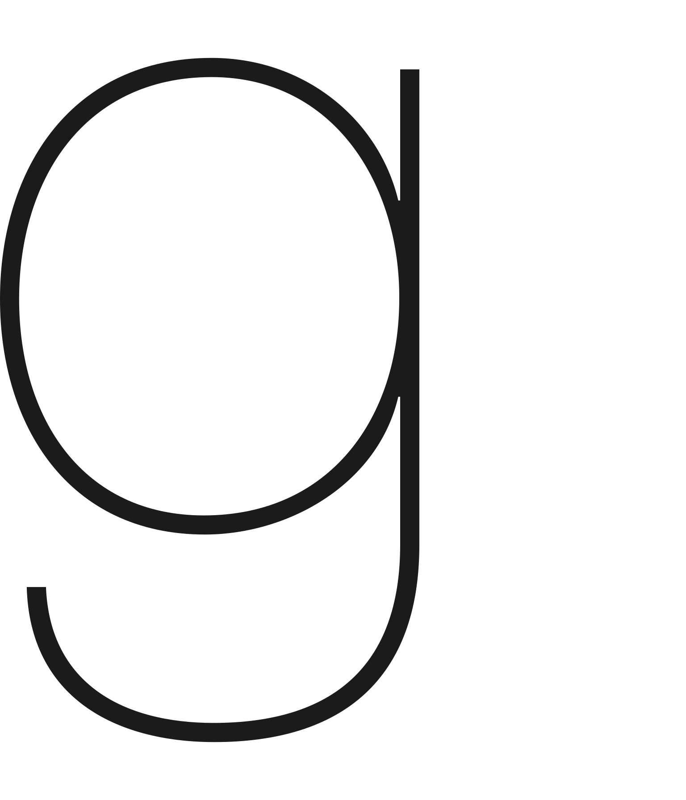

Links
The following is a long and hopefully-comprehensive list of my online identities and profiles.
It is categorised, sort of, but if you just want to contact me there's a better page for that.
Unless otherwise noted, these are all under the name Cycloneblaze. If an item isn't hyperlinked and that isn't explained, it's because there's no public profile attached to the account.
Cryptography
First of all, if you want me to cryptographically prove I am who I say I am, I've already done that for a few things with:
On a related note, the only cryptocurrency I hold is Stellar Lumens (XLM), because a wallet for it comes with Keybase. If you have any spare, you can send them to cycloneblaze*keybase.io or:
GC374ZTS2OLMPJX5VX6FY7HWLBUDM2WF5UOO7RHCY62M3ULG7PCJFQPA
If you don't know what I'm on about, don't worry about it.
Discussion
- Social media
- Mastodon
- lines
- Tildes (not to be confused with the tildeverse)
- Tumblr
- Twitter (@2Cycloneblaze2)
- deviantART
- Hackernews
- Subreply
Voat(since-deleted - I'm not linking to this site)
- Forums (ordered by post count!)
Messengers
- Discord
- Session
- Matrix (on Element)
- Telegram
- #IRC (I used to use this, but I don't frequent any channels at the moment. IRC accounts are hardly persistent and I think all mine are gone.)
- Email, of course
Music
- Bandcamp
- Soundcloud
- Newgrounds (I also have this for games and animations, but mostly music)
Games
- Platforms
- Games themselves
Code
Writing
- Medium
- Wordpress (nothing public here right now. Think I used to have a blog...)
- Weebly (no longer used, site was deleted by them at some point)
- nanowrimo
- Goodreads
Images
- Imgur (I only host, I don't post)
- Photobucket (under 2Cycloneblaze2)
Video
Wikis
- Wikipedia
- RSW / OSRSW
- Bulbapedia
- tvtropes
- SmashWiki
- Icaruspedia
- MediaWiki
- RationalWiki
- ShoutWiki
- UESPWiki
- Yugipedia
- Fandom/Gamepedia wikis:
Other websites
- Internet Archive
- Gravatar
- WhatPulse (no longer used)
- Google site (to be integrated into this site)
- I also have Google and Microsoft accounts. I do not disclose anything about them here, because there's no point in doing so, but I include them in case you hear from me through them.
And by the way...
If you want to link back to my website, perhaps you might consider using this old-fashioned website button that I made? It's 88x31px!
<a href="http://www.cycloneblaze.net"><img src="../images/button.png" alt="A rectangular horizontal button for linking to a website, with a comet on a starry background and the word 'Cycloneblaze' on it."></a>
Enjoy 🙂